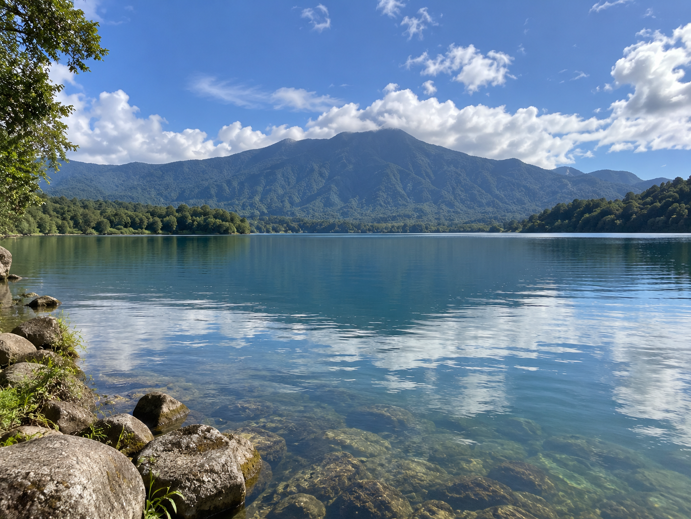

Sungai
Sumber air permukaan yang mendukung kebutuhan masyarakat, pertanian, dan ekosistem.
Perlindungan sumber air adalah usaha menjaga sungai, danau, mata air, sumur, serta daerah resapan agar kualitas dan ketersediaan air tetap terpelihara.
Lihat Cara Melindungi Sumber Air →Sumber air perlu dijaga agar tetap tersedia dan dapat dimanfaatkan secara bertanggung jawab.
Sumber air permukaan yang mendukung kebutuhan masyarakat, pertanian, dan ekosistem.

Menampung air dan menjadi habitat berbagai makhluk hidup yang perlu dilindungi.

Air yang muncul secara alami dari dalam tanah dan perlu dijaga kebersihan sekitarnya.

Air bawah tanah yang dapat dimanfaatkan melalui sumur dan perlu dilindungi dari pencemaran.
Aktivitas manusia yang tidak memperhatikan lingkungan dapat menurunkan kualitas air.
Sampah rumah tangga dan plastik yang dibuang ke sungai dapat mencemari air.
Limbah yang tidak diolah dengan baik dapat membawa zat pencemar ke perairan.
Pupuk dan pestisida berlebihan dapat terbawa aliran air menuju sumber air.
Berkurangnya vegetasi dan area resapan dapat mengganggu keseimbangan lingkungan.
Pencemaran sumber air berdampak pada kesehatan, ekosistem, dan kehidupan masyarakat.
Air tercemar dapat mengandung mikroorganisme atau zat berbahaya.
Pencemaran dapat mengganggu habitat ikan dan organisme air lainnya.
Sumber air tercemar membutuhkan pengolahan lebih lanjut sebelum digunakan.
Biaya pengolahan air dan pemulihan lingkungan dapat meningkat.
Perlindungan sumber air dapat dimulai dari kebiasaan sederhana dan kerja sama masyarakat.
Buang sampah pada tempatnya dan jangan membuang limbah ke sungai.
Rawat pohon dan tanaman untuk membantu melindungi tanah dari erosi.
Jaga area terbuka agar air hujan dapat meresap ke dalam tanah.
Ikuti kegiatan membersihkan sungai dan laporkan pencemaran kepada pihak terkait.
Lindungi sumber air dengan tidak membuang sampah dan limbah sembarangan, menjaga lingkungan sekitar sumur, serta ikut menjaga kebersihan sungai dan daerah resapan.